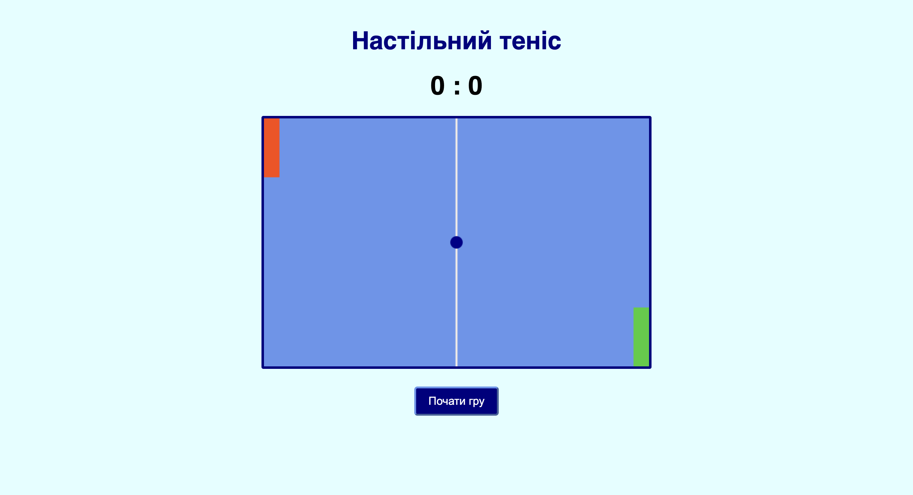
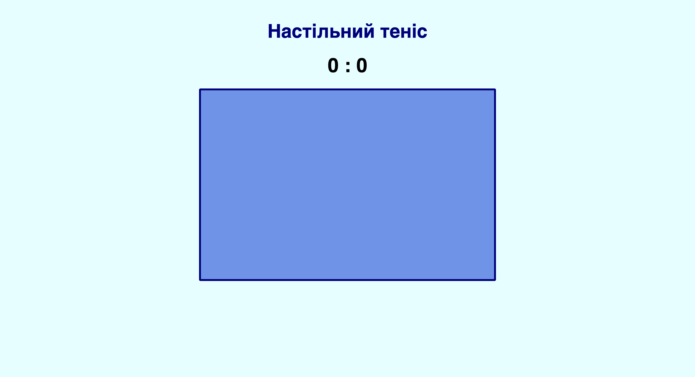
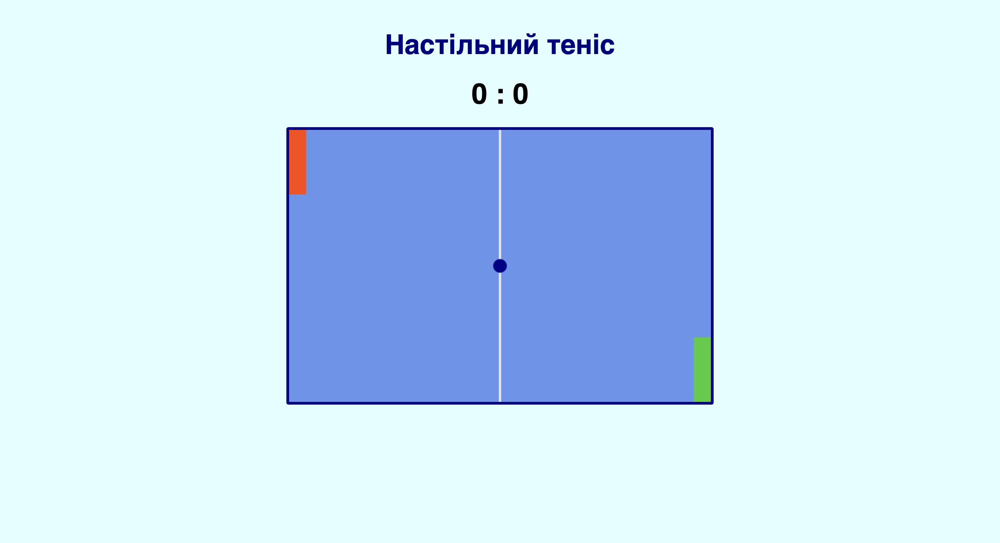

✧ Частина 1.1:
Вступ
▶
Історія гри
Історія гри Pong (укр. Настільний теніс) — це розповідь про те, як народилася сучасна індустрія відеоігор!
- Pong не була найпершою грою, але стала першим в історії суперхітом. Саме після її шаленого успіху люди зрозуміли, що відеоігри — це майбутнє, і почали масово їх створювати.
- Автор цієї гри написав її лише як "навчальне завдання", щоб попрактикуватися. Ніхто не очікував, що два прямокутники та крапка змінять світ.
- Перший ігровий автомат поставили для перевірки в барі. За кілька днів він зламався... бо відвідувачі накидали в нього так багато монет, що вони там просто застрягли!
- Коли з'явилася домашня версія Pong, за нею вишиковувалися величезні черги. Вона здійснила справжній переворот: якщо раніше телевізор можна було лише дивитися, то тепер люди вперше змогли керувати тим, що відбувається на екрані.
На цьому занятті ви дізнаєтеся, як можна самостійно написати код для цієї гри!

Підхід до створення ігор
Cтворення гри — це ітеративний процес. Cпочатку ми робимо так, щоб гра працювала, а потім — додаємо різні деталі, щоб у неї було зручно та цікаво грати.
1. Мінімальна робоча версія (MVP)
Це "скелет" гри. У ній є лише найнеобхідніше, щоб у неї взагалі можна було грати. Якщо забрати бодай один із цих пунктів, гра перестане працювати.
- Ігрове поле: Намальоване полотно (canvas) з чіткими межами.
- Гравці (ракетки): Дві ракетки (прямокутники). Ліва ракетка керується гравцем за допомогою клавіш (W — вгору, S — вниз). Права ракетка рухається автоматично, виконуючи роль простого комп'ютерного супротивника.
- М'яч: Круглий м'яч, який постійно рухається на полотні.
- Фізика: М'яч відбивається від верхньої та нижньої меж полотна (стелі та підлоги), а також від обох ракеток. Ракетки не можуть виїхати за межі полотна.
- Правила гри (рахунок): Якщо м'яч вилітає за правий або лівий край полотна, то гравець, який забив гол, отримує один бал. Після цього м'яч повертається в центр полотна і гра продовжується. Рахунок відображається на екрані.
2. Деталі, що роблять гру цікавішою
Ці деталі не є обов'язковими для того, щоб гра працювала, але саме завдяки їм вона стає справді цікавою.
- Динамічна складність: М'яч починає рухатися повільно (baseSpeed), але при кожному відбиванні від ракетки трохи прискорюється (до певного ліміту maxSpeed). Це додає азарту! Після кожного забитого голу швидкість скидається назад до базової.
- Баланс бота: Якщо комп'ютер бачитиме м'яч завжди, його буде неможливо перемогти. Щоб зробити гру чесною, бот починає реагувати на м'яч лише тоді, коли той перетинає центральну лінію полотна (botSeesBall). Крім того, ракетка бота має трохи меншу швидкість, ніж у гравця.
- Зрозумілий інтерфейс: Гра не починається миттєво — є кнопка "Почати гру", та невелика пауза після її натиску ("Приготуйтеся..."), щоб гравець встиг покласти руки на клавіатуру. Перед початком гри з'являється спливаюче вікно із правилами.
- Умови перемоги та програшу: Гра не триває нескінченно. Встановлено ліміт (наприклад, поки хтось не забʼє три голи), після досягнення якого гра зупиняється і з'являється повідомлення для гравця про перемогу або програш.
✧ Частина 1.2:
Налаштування
▶
Мета
Створити "сцену" для гри та підключити її до JavaScript.
- HTML/CSS. Створення розмітки сторінки: заголовок, блок для рахунку та саме ігрове поле (canvas). Стилізація цих елементів для гарного вигляду.
- JS Налаштування. Отримання доступу до полотна та до інструментів для малювання (canvas.getContext("2d")), збереження розмірів полотна. Створення базових змінних для рахунку (score1, score2) та прив'язка HTML-елементів до JS.
Підготовка
📥 pong.zip🧩 Завдання 0: Підготовка файлів
- Натисніть на кнопку вище, щоб завантажити стартові файли проєкту. Розархівуйте їх.
- Переконайтеся, що у папці є три файли: index.html, style.css та script.js.
- Відкрийте папку у своєму редакторі коду, а файл index.html — у браузері.
В index.html вже є базовий скелет сайту, підключені стилі та скрипти. Також там вже є заголовок сторінки та параграф для відображення рахунку. У файлі style.css є базовий дизайн сторінки, а в script.js — коментарі, які допоможуть розбити код на логічні частини.
Крок 1. Створення ігрового поля
Для початку нам потрібен стіл для нашого віртуального тенісу. У веброзробці для малювання ігор використовується спеціальний тег <canvas> (полотно).
🧩 Завдання 1.1: HTML та CSS
- У файлі index.html (після блоку рахунку) додайте тег полотна. У нього мають бути такі атрибути: id="canvas", width="620" та height="400".
- У файлі style.css додайте стилі, наведені нижче, щоб полотно виглядало як стіл для тенісу (кольори можете змінити на власні):
canvas {
background-color: cornflowerblue;
border: 4px solid navy;
border-radius: 3px;
}Тепер переходимо у файл script.js. Нам потрібно "пояснити" комп'ютеру, де знаходиться наше полотно та дізнатися його розміри, щоб м'яч не вилітав за його край.
🧩 Завдання 1.2: JavaScript
У розділі "1. НАЛАШТУВАННЯ" напишіть код за такими кроками:
- Створіть константу canvas та знайдіть полотно за допомогою document.querySelector("#canvas").
- Створіть константу ctx для інструментів малювання: canvas.getContext("2d").
- Збережіть ширину полотна (canvas.width) у константу gameWidth.
- Збережіть висоту (canvas.height) у константу gameHeight.
Крок 2. Змінні для рахунку
Залишаючись у розділі налаштувань (JS), давайте створимо змінні, які будуть запам'ятовувати, скільки балів мають гравці. Оскільки рахунок під час гри буде постійно змінюватися, ми використовуємо ключове слово let.
🧩 Завдання 2: Логіка
Знайдіть у JS-файлі коментар:
// 🔸 Рахунок гравцівСкопіюйте і додайте під тим коментарем вже написаний код для рахунку першого гравця, а потім самі напишіть такий код для другого гравця:
// 1-й гравець:
const score1Element = document.querySelector("#s1");
let score1 = 0;
// 2-й гравець:
// 🔹 допишіть свій код тут 🔹Очікуваний результат на цьому етапі:

✧ Частина 2.1:
Обʼєкти
▶
Мета
Створити "акторів" для гри.
- Ракетки. Створення обʼєктів для ракеток (paddle1, paddle2) для збереження їхніх координат, розмірів, швидкостей та кольорів.
- Мʼяч. Створення обʼєкта для мʼяча (ball) для збереження його координат, радіуса, кольору та швидкостей руху по осях X та Y.
Крок 3. Створення ракеток
Щоб наші "актори" з'явилися у грі, потрібно описати їхні характеристики: де вони знаходяться (координати x та y), який у них розмір, швидкість та колір. Для цього в JavaScript зазвичай використовують об'єкти.
🧩 Завдання 3
Знайдіть у JS-файлі коментарі:
// 🔸 Ракетка 1 (ліва)
// 🔸 Ракетка 2 (права)Скопіюйте у потрібне місце код для першої ракетки, а тоді самі напишіть такий код для другої:
const paddle1 = {
x: 0,
y: 0,
width: 25,
height: 95,
speed: 9,
color: "orangered",
};💡 Підказка: Щоб розмістити другу ракетку в нижньому правому кутку полотна, треба від ширини полотна (gameWidth) відняти ширину самої ракетки (25) для координати x, і те саме, але з висотою, зробити для координати y.
Крок 4. Створення мʼяча
Тепер нам потрібен м'яч. Оскільки він круглий, замість ширини та висоти ми задамо йому радіус. Також м'ячу потрібна швидкість. Щоб він міг літати по діагоналі та правильно відбиватися від стін, ми задаємо йому дві окремі швидкості: velocityX (швидкість і напрямок руху по горизонталі) та velocityY (по вертикалі).
🧩 Завдання 4
Знайдіть у JS-файлі коментар:
// 🔸 М'ячСкопіюйте код для м'яча, але замість знаків питання ❓ напишіть математичну дію, щоб м'яч з'явився рівно по центру ігрового поля.
const ball = {
x: ❓, // 🔹 напишіть математичну дію тут
y: ❓, // 🔹 напишіть математичну дію тут
radius: 10,
color: "darkblue",
velocityX: 5,
velocityY: 5,
};💡 Підказка: Центр — це половина ширини (gameWidth) та половина висоти (gameHeight).
✧ Частина 2.2:
Малювання
▶
Мета
Навчити браузер малювати наше ігрове поле та "акторів" на ньому.
- Лінія (сітка). Намалювати роздільну лінію по центру, щоб поле було схоже на стіл для тенісу.
- Ракетки. Намалювати два прямокутники за допомогою інструменту fillRect(...).
- Мʼяч. Намалювати коло по центру полотна за допомогою інструменту arc(...).
Крок 5. Створення функції малювання
Всі команди для малювання ми зберемо в одну "коробку" — спеціальну функцію. Ми будемо використовувати наш "віртуальний пензлик", який раніше зберегли у змінну ctx.
🧩 Завдання 5
Знайдіть у JS-файлі розділ "4. МАЛЮВАННЯ ТА АНІМАЦІЯ" та коментар:
// 🔸 Функція drawGame: Малюємо груПід цим коментарем створіть порожню функцію з назвою drawGame. Далі всередині цієї функції ми будемо додавати код крок за кроком.
Спочатку додайте команди, які готують наше "полотно": стирають попередній кадр (щоб картинка не розмазувалася під час руху обʼєктів) та малюють центральну лінію-сітку. Цю частину можете просто скопіювати:
// 1. Очищаємо полотно перед малюванням нового кадру
ctx.clearRect(0, 0, gameWidth, gameHeight);
// 2. Малюємо білу лінію по центру
ctx.strokeStyle = "#f9f1e6";
ctx.lineWidth = 3;
ctx.beginPath();
ctx.moveTo(gameWidth / 2, 0);
ctx.lineTo(gameWidth / 2, gameHeight);
ctx.stroke();Тепер намалюємо ракетки. Інструмент fillRect малює прямокутник і завжди просить 4 значення в такому порядку: координати x та y (верхнього лівого кута), ширину та висоту. Замініть знаки питання ❓ на правильні властивості об'єкта paddle1 для малювання лівої ракетки, а тоді самостійно напишіть код для правої ракетки:
// 3. Малюємо ліву ракетку
ctx.fillStyle = ❓; // 🔹 колір фону ракетки 1
ctx.fillRect(❓, ❓, ❓, ❓); // 🔹 x, y, ширина та висота ракетки 1
// 4. Малюємо праву ракетку
// 🔹 допишіть свій код тут 🔹Наостанок малюємо м'яч. Оскільки це коло, ми використовуємо команду arc. Вона просить координати центру кола (x, y) та радіус. Кути для малювання ідеального кола (0 та Math.PI * 2) вже задані:
// 5. Малюємо м'яч
ctx.fillStyle = ❓; // 🔹 колір фону мʼяча
ctx.beginPath();
ctx.arc(❓, ❓, ❓, 0, Math.PI * 2); // 🔹 x, y, радіус
ctx.fill();Крок 6. Виклик функції
Якщо ви зараз оновите сторінку, то... нічого не зміниться! Це тому, що ми лише створили функцію, але ще не сказали комп'ютеру її виконати.
🧩 Завдання 6
Спустіться в самий низ вашого файлу до розділу "5. ЗАПУСК ГРИ" та знайдіть коментар:
// 🔸 Малюємо перший кадр, щоб екран не був порожнімОдразу під цим коментарем викличте вашу нову функцію, щоб браузер нарешті намалював ракетки та м'яч на екрані.
Очікуваний результат на цьому етапі:

✧ Частина 3.1:
Ракетки
▶
Мета
Змусити ракетки рухатися та реагувати на дії гравця.
- Гравець. Навчити гру розуміти натискання клавіш W та S, щоб рухати ліву ракетку вгору і вниз.
- Анімація. Створити ігровий цикл, який буде постійно оновлювати картинку на екрані.
Крок 7. Відстеження клавіатури
Щоб керувати ракеткою, нам треба знати, чи тримає гравець натиснутою кнопку (клавішу W або S). Ми створимо об'єкт keys, який буде працювати як перемикач: кнопка натиснута — true, відпущена — false.
Ми використовуємо event.code замість звичайних літер (event.key). Цей підхід дозволяє грі розуміти, яку саме фізичну кнопку ви натиснули, навіть якщо у вас увімкнена українська розкладка клавіатури.
🧩 Завдання 7
Знайдіть у JS-файлі розділ "2. КЕРУВАННЯ" та коментар:
// 🔸 Слідкуємо за тим, які клавіші натиснутіСкопіюйте цей код під знайдений коментар. Для події відпускання клавіші (keyup) вам потрібно самостійно дописати рядок коду за аналогією з натисканням, але змінити стан перемикача на false:
// Створюємо "перемикачі" для клавіш (спочатку вони не натиснуті)
const keys = {
KeyW: false,
KeyS: false,
};
// Коли клавіша НАТИСНУТА, вмикаємо перемикач (true)
window.addEventListener("keydown", (event) => {
if (event.code in keys) keys[event.code] = true;
});
// Коли клавіша ВІДПУЩЕНА, вимикаємо перемикач (false)
window.addEventListener("keyup", (event) => {
// 🔹 допишіть свій код тут 🔹
});Крок 8. Рух ракетки гравця
Координати ракеток змінюватимуться у функції movePaddles (з англ. "рухати ракетки"). Ми хочемо, щоб ракетка рухалася лише тоді, коли натиснута відповідна клавіша (W або S). При цьому дуже важливо, щоб ракетка не могла вийти за межі полотна. Для цього ми спершу перевіряємо, чи є ще місце для руху:
- Для руху вгору ми перевіряємо, чи координата y ракетки більша за 0 (y > 0).
- Для руху вниз ми перевіряємо, чи нижній край ракетки не торкнувся "підлоги" (y < gameHeight - paddle1.height).
- Координату x перевіряти не потрібно, бо ракетка рухається лише вгору та вниз.
🧩 Завдання 8
Знайдіть у JS-файлі розділ "3. ЛОГІКА ГРИ" та коментар:
// 🔸 Функція movePaddles: Рухаємо ракетки, але не даємо їм вийти за межі полотнаПід ним додайте код для створення функції, яка рахуватиме нові координати ракетки. Логіка для перевірки меж та для руху вгору (KeyW) вже написана. Напишіть за аналогією останній рядок для руху вниз (KeyS):
function movePaddles() {
// --- ЛЮДИНА (Ракетка 1) ---
// 1. Перевіряємо, чи є куди рухатися
const p1CanMoveUp = paddle1.y > 0;
const p1CanMoveDown = paddle1.y < gameHeight - paddle1.height;
// 2. Якщо клавіша натиснута ТА є місце -> рухаємо ракетку
if (keys.KeyW && p1CanMoveUp) paddle1.y -= paddle1.speed;
// 🔹 допишіть свій код для руху вниз тут 🔹
}Крок 9. Анімація
А щоб ми *бачили* цей рух, нам потрібен ігровий цикл — функція update. Вона буде: змінювати координати ➔ малювати новий кадр ➔ просити браузер повторити це знову і знову (за допомогою requestAnimationFrame).
🧩 Завдання 9
Тепер знайдіть коментар:
// 🔸 Функція update: Головний цикл гри
Створіть під ним функцію update та
запустіть її.
⚡️ Важливо: Знайдіть свій старий виклик
drawGame() у самому низу
файлу (з Кроку 6) і
закоментуйте його!
function update() {
// Рухаємо об'єкти
// 🔹 Викличте функцію movePaddles 🔹
// Малюємо новий кадр
// 🔹 Викличте функцію drawGame 🔹
// 3. Повторюємо цикл нескінченно
requestAnimationFrame(update);
}
// 🔹 Викличте функцію update 🔹Очікуваний результат на цьому етапі:
Ліва ракетка має миттєво реагувати на натискання клавіш W та S (або Ц та І), і не виїжджати за межі поля. М'яч та ракетка комп'ютера поки що стоять на місці.
✧ Частина 3.2:
Мʼяч та AI
▶
Мета
...
- ...
Крок X. ...
...
🧩 Завдання x: ...
...
// 🔸 ...
✧ Частина 4.1:
Зіткнення
▶
Мета
...
- ...
Крок X. ...
...
🧩 Завдання x: ...
...
// 🔸 ...Очікуваний результат на цьому етапі:
✧ Частина 4.2:
Гол
▶
Мета
...
- ...
Крок X. ...
...
🧩 Завдання x: ...
...
// 🔸 ...Очікуваний результат на цьому етапі:
✧ Частина 5.1:
Зручність
▶
Мета
...
- ...
Крок X. ...
...
🧩 Завдання x: ...
...
// 🔸 ...Очікуваний результат на цьому етапі:
✧ Частина 5.2:
Цікавість
▶
Мета
...
- ...
Крок X. ...
...
🧩 Завдання x: ...
...
// 🔸 ...